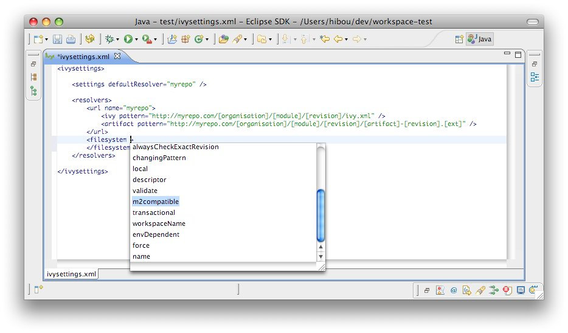

IvyDE provides an editor of ivysettings.xml files which make the edition of such files simple. It provides completion on every tags and attribute names. <center><img src="images/settings.jpg"/></center> Completion comes with contextual help. The completion popup is displayed when hitting simultaneously the CTRL and the SPACE keys. <b>Available completions:</b><ul> <li><b>Xml structure</b>: allows you quickly to insert the good tag at its right place. If the tag can have nested children both notations, simple tag and open tag, are proposed <center><img src="images/settings_completion_struct.jpg"/></center> </li> <li><b>Tag attributes</b>: when your cursor is placed in a tag bracket the completion show available attributes for the enclosing tag. <center></center> </li> </ul>